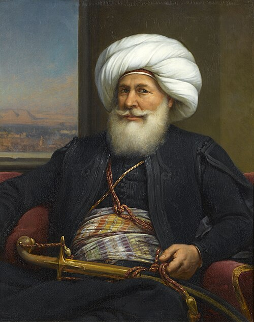

historical figures
Muhammad Ali Pasha: The Architect of Modern Egypt

WHO IS MUHAMMAD ALI PASHA ?
Muhammad Ali Pasha is widely regarded as the "Founder of Modern Egypt." An ambitious commander of Albanian origin,
he rose from the ranks of the Ottoman army to become the Wali (Governor) of Egypt,
eventually establishing a dynasty that ruled until the mid-20th century.
Profile & Character Traits
Muhammad Ali was a complex figure—part visionary reformer and part ruthless autocrat.
His rise was fueled by a unique blend of personal attributes:
- Visionary: He looked toward Europe for inspiration, realizing that for Egypt to be powerful, it needed to modernize its military, economy, and education.
- Pragmatic & Resourceful: He was a master of political maneuvering, often playing rival factions (the Ottomans, the Mamluks, and the British) against each other.
- Ruthless:He was famously uncompromising when it came to his power, most notably demonstrated by the elimination of the Mamluks.
- Ambitious: His goals extended far beyond Egypt; he sought to build an empire that could rival the Ottoman Sultan himself.
- Determined: Despite having no formal education (he reportedly learned to read and write in his 40s), he was deeply committed to intellectual and industrial progress.
Entry into Egypt
Muhammad Ali arrived in Egypt in 1801 as second-in-command of an Albanian volunteer expeditionary force.
Their mission was to assist the Ottoman Empire in reclaiming Egypt following the withdrawal of Napoleon Bonaparte’s French forces.
The period after the French departure was chaotic, marked by a three-way power struggle between the Ottoman Turks, the Egyptian Mamluks, and the British.
Muhammad Ali used this instability to his advantage .
He gained the support of the Egyptian Ulama (religious scholars) and the general public by presenting himself as their protector against Mamluk oppression.
In 1805, the people of Cairo demanded he become their leader, and the Ottoman Sultan was forced to recognize him as the Governor of Egypt.
Major Achievements and Reforms
Once in power, Muhammad Ali initiated a series of radical reforms designed to transform Egypt into a modern state.
- Military Modernization
- He established a "New Order" army (Nizam-i Jedid) based on European models.
- He founded military schools and hired French officers to train Egyptian soldiers.
- He built a powerful naval fleet and established a massive shipyard in Alexandria.
- Economic & Agricultural Revolution
- The Monopoly System so he took control of all agricultural production, ensuring the state profited from exports.
- Cash Crops so he introduced Long-Staple Cotton, which became a world-renowned Egyptian export.
- Irrigation so he built the Delta Barrages and expanded the canal system, significantly increasing arable land.
- Industrialization
- He built the first modern factories in Egypt to produce textiles, sugar, paper, and weapons. His goal was to make Egypt self-sufficient, especially in military equipment.
- Educational Reform
- Educational Missions so he sent Egyptian students to Europe (mainly France) to study engineering, medicine, and administration.
- Modern Schools so he established specialized schools for medicine, pharmacy, engineering, and languages.
- The Printing Press so he founded the Bulaq Press in 1820, the first indigenous press in the Arab world, to publish textbooks and government documents.
- Political Consolidation
- The Massacre of the Citadel (1811)so he permanently ended the Mamluk threat by inviting their leaders to a celebration and then ordering his troops to eliminate them,
securing his absolute rule over Egypt.